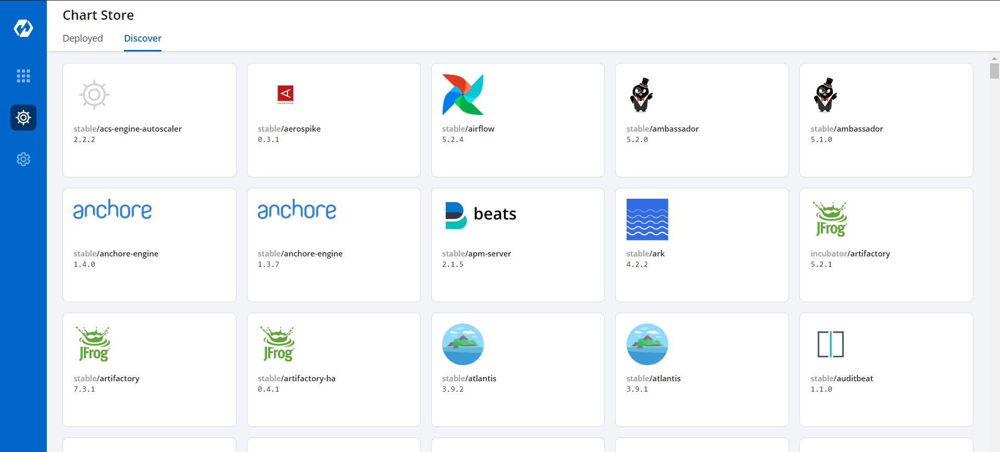
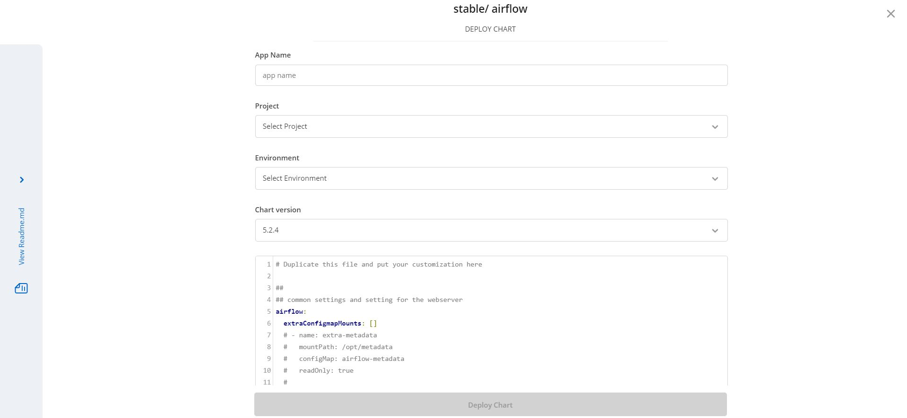
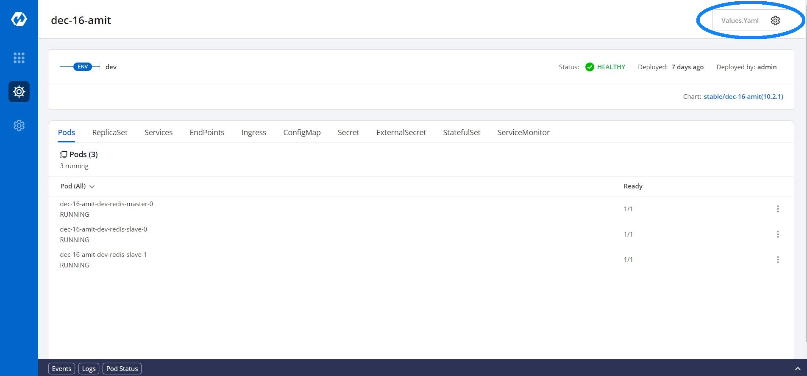
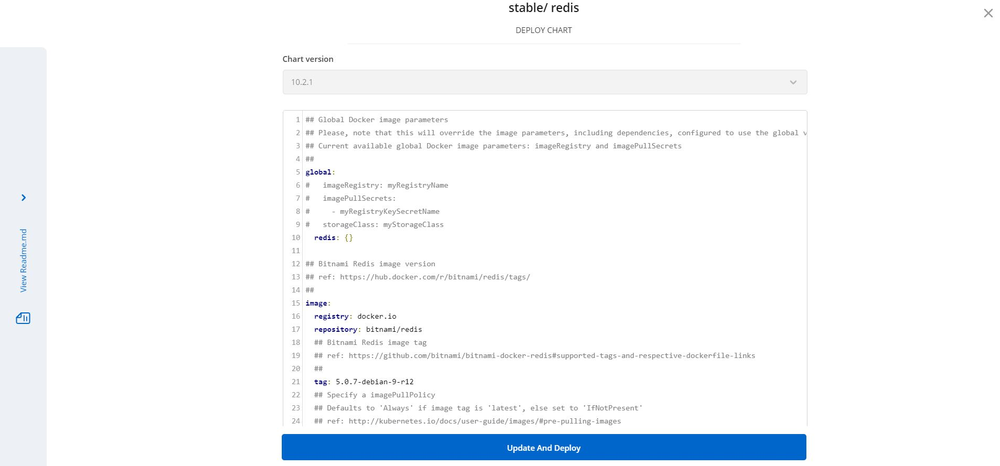
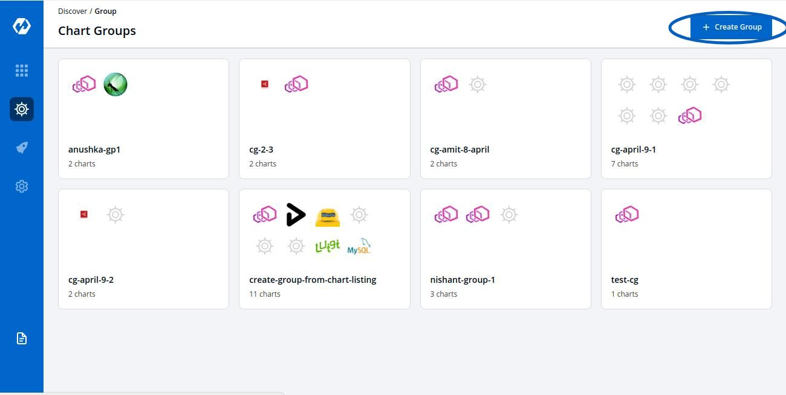
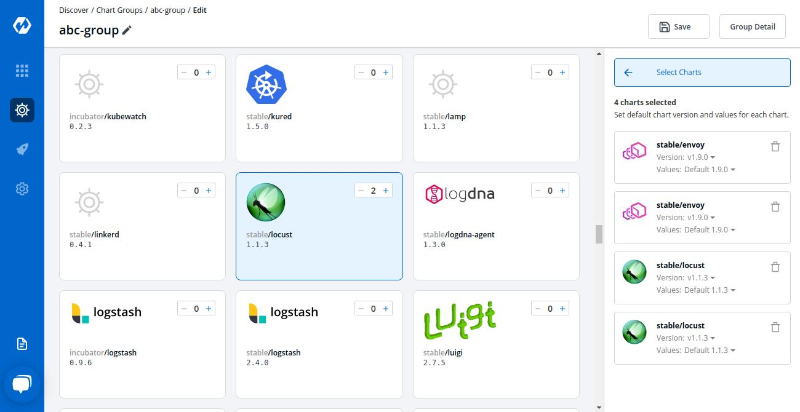
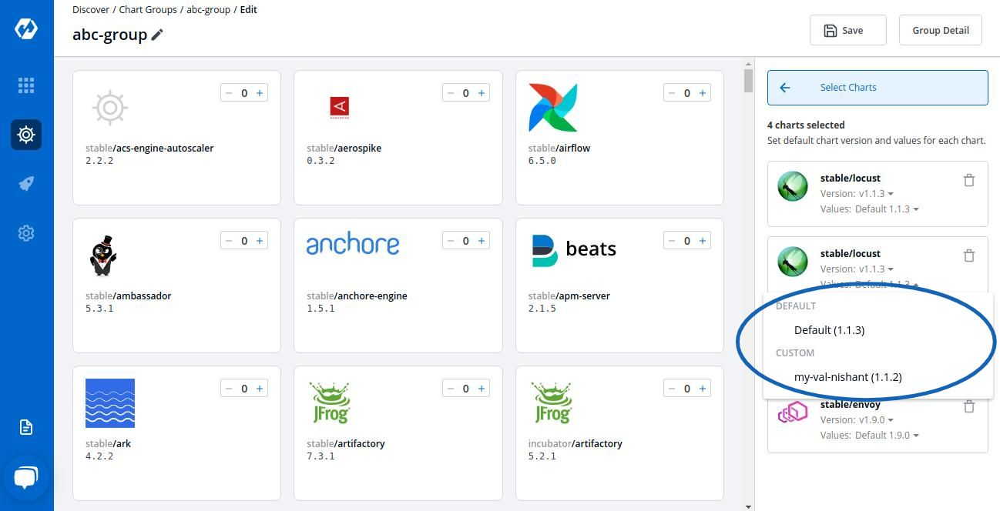
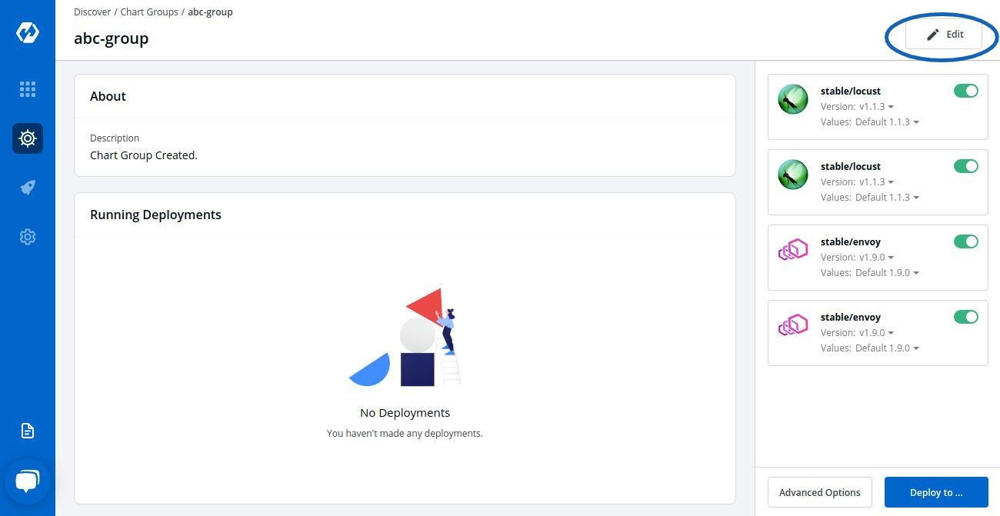
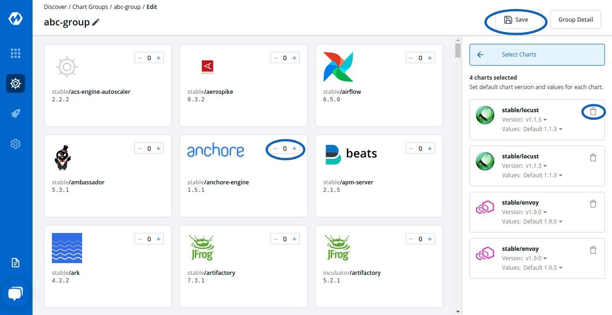
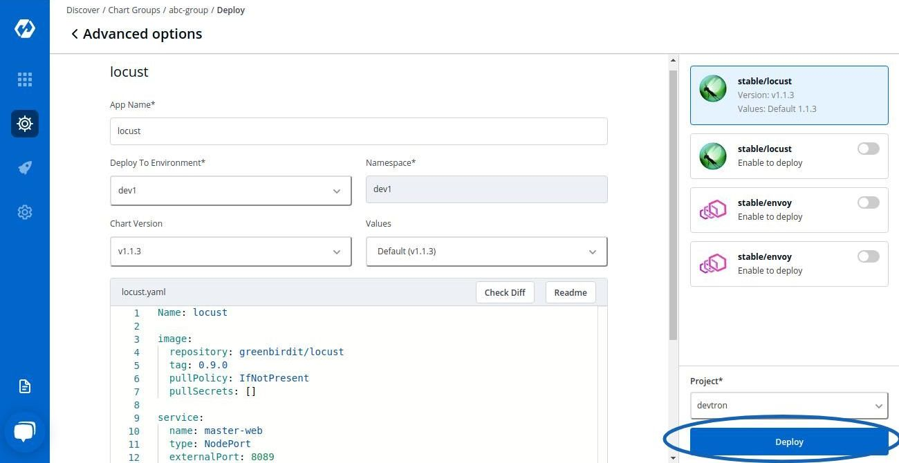

Deploying Charts
Charts can be deployed individually or by creating a group of Charts.
Both methods are mentioned in the given document.
Deploying Chart

Select Discover and then select the chart that you want to use
Click on README.MD to get more idea about the configurations of the chart
Select the Chart Version that you want to use and Chart Value, you can either use the default Values or custom values. To know about Custom Values, Click On: Custom Values
The configuration values can be edited in the section given below Chart Version.
| Key | Description |
|---|---|
App Name |
The name of the app |
Project |
Project of the app |
Environment |
Environment of the app to be deployed |
Chart Version |
Version of the chart to be used |

ReadMe.md present on the left can be used by the user to set configuration values
Click on Deploy Chart to deploy the chart

You can see the status of the chart deployed. Click on Values.Yaml to reconfigure the deployment.

Configuration values can be edited over here by the help of ReadMe.md
Select Update And Deploy to update new settings.
Custom Values
You can use the default values or create Custom value by clicking on Create Custom
You can name your Custom Value, select the Chart Version and change the configurations in YAML file.
Click on Save Template to save the configurations.
Deploying Chart Groups
To deploy multiple applications and work with them simulataneously, you can use Chart Groups.
To create Chart Groups
Click on Discover and Click on Create Group

Add the Group Name and Description and Click on Create Group
You can select the Charts that you want to add in your Chart Group by clicking on ‘+’ sign. You can select a particular chart multiple number of times according to your requirements.

Select the Version and Values for your charts.
You can use Default Values or the Custom Values, just make sure the Value that you select for your Chart is comptabile with the Version of the Chart that you are using.

To edit the Chart Configuration, Click on ‘Edit’

You can Add more Charts to your existing Chart Group or Delete Charts from your existing Chart Group.
After making changes, Click on Save to save changes to your Chart Group.

If you wish to edit the Chart Configuration, Double Click on that Chart and edit the Configurations in YAML File.

You can edit the App Name, Chart Version, Values, Deploy Environment and the YAML file.
| Key | Description |
|---|---|
App Name |
Name of the app |
Project |
Name of Project in which app has to be created |
Environment |
Name of the Environment in which app has to be deployed |
Chart Version |
Select the Version of the chart to be used |
Click on Deploy to initiate the deployment of a Chart in Chart Group.